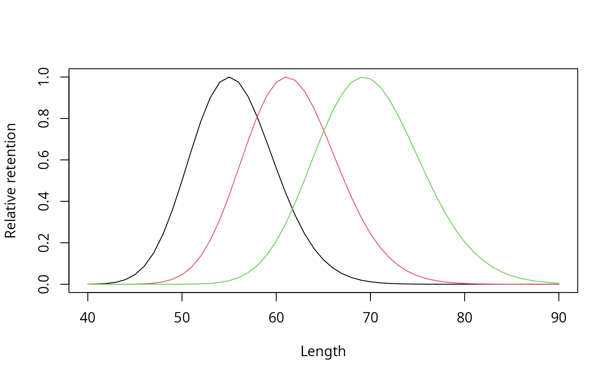

Selection curves of Millar's selectivity models
Source:R/predict.select_Millar.R
select_Millar_curve.RdRelative retention for given parameters of the selection
curves of Millar's selectivity model (select_Millar), e.g.
published gillnet selectivity parameters.
Arguments
- lengths
lengths for which the retention is calculated.
- meshSizes
mesh sizes for which the retention is calculated.
- rtype
type of the selection curve:
"norm.loc"for a normal curve with common spread,"norm.sca"for a normal curve with variable spread,"lognorm"for a lognormal curve,"binorm.sca"for a bi-normal curve,"bilognorm"for a bi-lognormal curve,"tt.logistic"for a logistic curve,"gamma"for a gamma curve.- par
parameters of the selection curve for the reference mesh size (
refMesh), as reported byselect_Millarinestimates(see Details). Either a numeric vector or the matrixestimatesofselect_Millar.- refMesh
the mesh size to which the parameters refer (default: the first value of
meshSizes).
Details
The parameters (par) are, in this order:
"norm.loc","norm.sca","lognorm","gamma": mode and standard deviation of the selection curve of the reference mesh size;"binorm.sca","bilognorm": mode and standard deviation of the first curve, mode and standard deviation of the second curve, proportion of the first curve (p);"tt.logistic": length at 50% retention (L50) and selection range (SR = L75 - L25); a third value (p, the split between control and experimental gear) is ignored.
The selection curves of other mesh sizes follow from the principle of
geometric similarity: the mode and standard deviation ("norm.sca",
"lognorm", "gamma", "binorm.sca",
"bilognorm") or only the mode ("norm.loc") are
proportional to the mesh size. The "tt.logistic" curve is the same
for all mesh sizes.
The curves are scaled to a maximum retention of 1 (except bi-modal
curves). Note that the parameters in par of the result of
select_Millar are on an internal scale (e.g. on the log
scale for "lognorm"); use estimates or
predict.select_Millar for a fitted model.
References
Millar, R. B., Holst, R., 1997. Estimation of gillnet and hook selectivity using log-linear models. ICES Journal of Marine Science: Journal du Conseil, 54(3), 471-477.
Examples
## lognormal selection curve with mode 55 cm and SD 4.5 cm for a mesh
## size of 13.5 cm, for several mesh sizes
sel <- select_Millar_curve(lengths = 40:90, meshSizes = c(13.5, 15, 17),
rtype = "lognorm", par = c(55, 4.5))
matplot(40:90, sel, type = "l", lty = 1, xlab = "Length",
ylab = "Relative retention")

## the same with the estimates of a fitted model
data(gillnet)
output <- select_Millar(gillnet, x0 = NULL, rtype = "lognorm", plot = FALSE)
select_Millar_curve(lengths = c(50, 60, 70), meshSizes = 16,
rtype = "lognorm", par = output$estimates,
refMesh = gillnet$meshSizes[1])
#> 16
#> 50 0.004553416
#> 60 0.598984251
#> 70 0.662161060